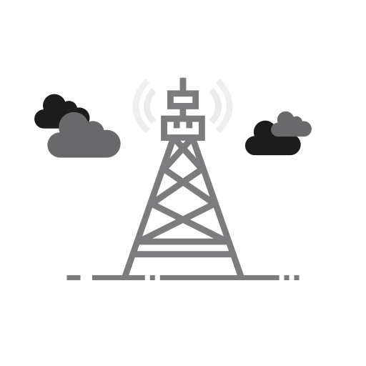

<div class="tab_header">Scanner le code</div>

<!-- Custom Refresher Start -->
<div class="cpr_frontdrop" [ngStyle]="{'display' : popFD}"></div>
<div class="cp_refresher_wrapper" [ngStyle]="{'transform' : posY, 'transition' : animDur}">
  <div class="custom_pull_refresher"></div>
</div>
<ion-content [ngStyle]="{'opacity' : mainOpac}" [forceOverscroll]="false" *ngIf="ifHasConnection" color="secondary" class="mainContent" [scrollEvents]="true" (ionScroll)="scrollEvent($event)" (touchmove)="pull($event)" (touchstart)="pullstart($event)" (touchend)="endpull()">
  <div class="scan_button" (click)="scannerCodeDelay()">
    
    <span class="rippleEffect"></span>
  </div>
</ion-content>

<ion-content [ngStyle]="{'opacity' : mainOpac}" [forceOverscroll]="false" *ngIf="!ifHasConnection" color="secondary" class="mainContent noConnContent" [scrollEvents]="true" (ionScroll)="scrollEvent($event)" (touchmove)="pull($event)" (touchstart)="pullstart($event)" (touchend)="endpull()">
    <div class="no_connection">
    
    <h1>Veuillez vous assurer que votre appareil est connecté au réseau.</h1>
  </div>
</ion-content>
